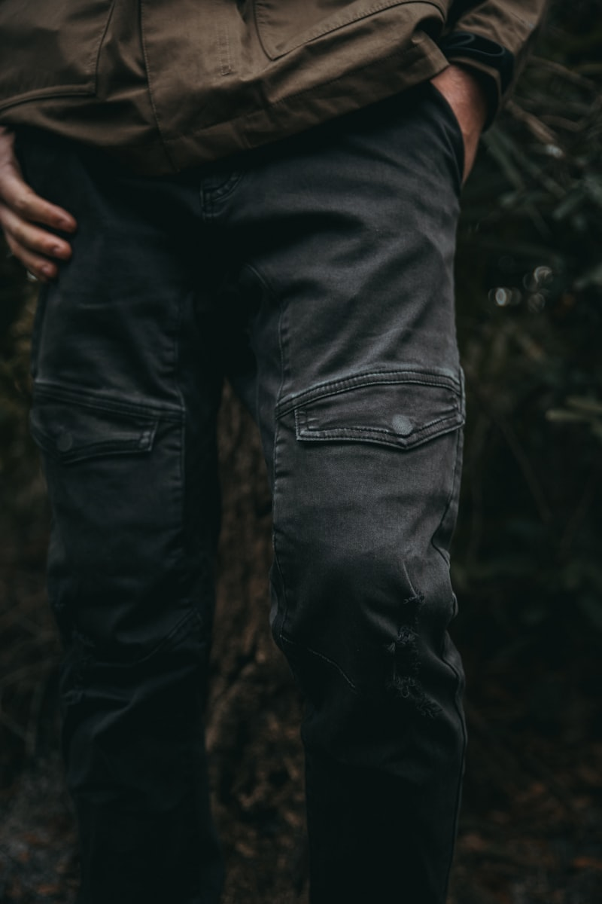

Technical Apparel Gazette
All-Weather Journal
Masterclass articles on membrane waterproofing, goose down insulation science, and garment care.

Understanding Hydrostatic Head Waterproof Ratings
How water column pressure tests measure technical membrane storm protection.
Read Gazette Article →
800-Fill Power Goose Down vs. Synthetic Insulation
Evaluating warmth-to-weight ratios and compressibility for alpine parkas.
Read Gazette Article →
How to Re-Wash and Restore DWR Waterproof Coatings
Step-by-step technical wash instructions to reactivate water-beading performance.
Read Gazette Article →
The Evolution of the Heritage Double-Breasted Trench Coat
Tracing 100 years of gabardine military rainwear to modern sartorial icons.
Read Gazette Article →
YKK AquaGuard Zippers: Securing Outerwear Against Storms
Polyurethane seam sealing technology that blocks driving wind and rain.
Read Gazette Article →
Layering Systems for Extreme Sub-Zero Alpine Expeditions
Base, mid, and hardshell layering strategies for sub-zero mountain traverses.
Read Gazette Article →
Sustainable Recycled Membranes in Modern Technical Outerwear
Fluorocarbon-free DWR finishes and 100% recycled nylon face fabrics.
Read Gazette Article →